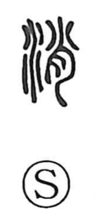

消

Uncategorized
Kun: kieru, kesu | On: shou
to disappear ・ to go out ・ to extinguish ・ to put out ・ to run out
Explanation
消 is a phono-semantic compound with the water element on the left and 肖 as its phonetic. 肖 originally depicts a small piece of meat pierced by a bone, suggesting something at the tip or end; in a tree it gives the sense found in 梢, the treetop. With water added, the character pictures water sinking away and vanishing, and by extension came to mean to go out or be extinguished, to run out, and to put out. The same phonetic nuance appears in 悄, where the heart weakens and droops, and in compounds like 消散 and 消滅 for things fading from sight, and 消極 for a state of depleted energy or will.